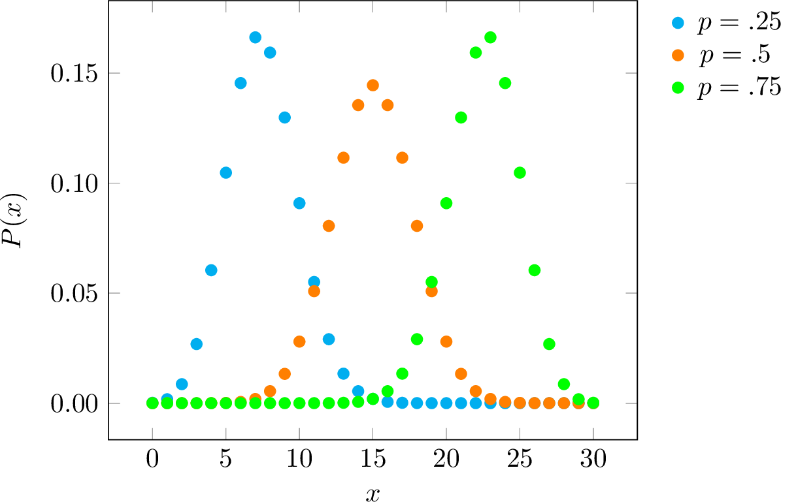
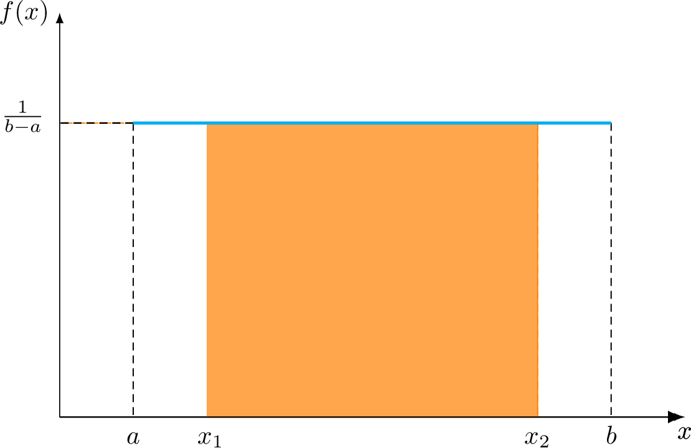
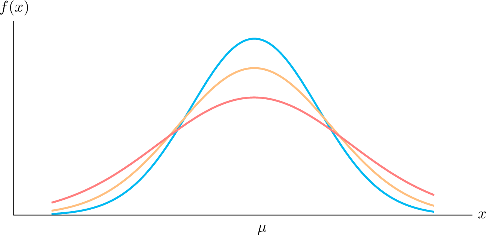

Temporal Uncertainty¶
Temporal is related to time, which is a (quantitative) continuous variable, while uncertainty refers to situations involving unknown information.
(see also Time and dating)
Monte-Carlo simulation tests the significance of the observed fluctuations in the context of uncertainty in the calibration curve and [archaeological] sampling.
Probability and uncertainty¶
We can apply a probabilistic approach when dealing with uncertainty. In this case, uncertainty is considered a measure quantifying the likelihood that events will occur.
Different approaches for assigning probabilities include:
the proportion of a particular outcome to all possible outcomes (classical)
the long-run relative frequency of the probability for an outcome to occur
certain degree of belief (subjective)
Probability space¶
A probability space defines an occurrence or event as a subset of that space.
For example, if the probability space is the interval \([0,1]\), with the uniform distribution then the interval \([ \frac{1}{3}, 1 ]\) is an event that represents a randomly chosen number between \(0\) and \(1\) turning out to be at least \(\frac{1}{3}\).
Summed probability distribution¶
A proxy for population levels is found in summed probability distributions (SPD) of dates.
Probability distributions¶
A probability distribution describes the associated probability of possible outcomes for a random variable \(X\).
For a single variable, the data is allocated in univariate distributions, and we use multivariate distributions to infer on multiple parameters.
Binomial distribution¶
A binomial distribution is a continuous distribution that describes a binomial experiment where there are two possible outcomes.
The probability mass function (p.m.f.) corresponding to the binomial distribution represents the probability of \(x\) successes in a binomial experiment
\(P(x) \;=\; {n\choose x} ~p^x (1-p)^{n-x}\)
where \(P(x)\) is the distribution function for the probability of success for \(x = 0, 1, 2, \dots, n\).
|  |
{kind=link}
A plot of the binomial distribution for \(n=30\) and with different \(p\) values.
Note
The Bernoulli distribution is a special case of the binomial distribution when \(n = 1\).
Trapezoidal distributions¶
Trapezoidal distributions seems appropriate for modeling the duration and the form of a phenomenon with a growth-stage, relative stability, and decline. These three parameters are not necessarily similar and an occurrence can have, for example, a long development and abrupt decay.
Todo
Probability density function of the generalized trapezoidal distribution.
Uniform distribution¶
The uniform distribution is a special case of a trapezoidal distribution with a constant probability.
The probability density function of the continuous uniform distribution for \(a \leqslant x \leqslant b\)
\(f(x) \;=\; \frac{1}{b-a}\)
and \(f(x) = 0\) iff \(x<a\) or \(x>b\)
|  |
{kind=link}
Uniform distribution plot for \(P(x_1 < X < x_2)\).
Note
There is also a discrete version of the uniform distribution with a mass probability function.
Normal distribution¶
The normal distribution –or “bell curve”– is the probability distribution for a normal random variable \(X \sim \mathcal{N} (\mu,\sigma^2)\). The normal distribution is also called Gaussian distribution in honor to C.F. Gauss who described it.
The normal distribution is the most important distribution in statistics, and play a crucial role in statistical inference. This is partly because it approximates well the distributions of many types of variables.
The exact form of the distribution depends on the values of the mean \(\mu\) and the standard deviation \(\sigma\) parameters.
The probability density function of a normal random variable \(-\infty < x < \infty\) is:
\(f(x) \;=\; \frac{1}{{\sigma \sqrt {2\pi } }}\;e^{{{ - \frac12 \left( \frac{x - \mu }{\sigma} \right)^2 } }}\)
where \(e \approx 2.7183\) (Euler’s number), and \(\pi \approx 3.1416\) (Pi number).
Note
A special case of the normal distribution with mean \(\mu = 0\) and standard deviation \(\sigma = 1\) is the standard normal distribution \(Z\). Any arbitrary normal distribution can be converted to \(Z\).
|  |
{kind=link}
Normal distributions with different variances \(\sigma^2\) and same mean \(\mu\).
Notation¶
To study temporal uncertainty, the following notation is adopted:
\(\varOmega =\) range of time
\(\tau =\) time span of existence
\(\Delta \tau =\) duration of \(\tau\)
\(t_i =\) a given portion of time
\(\Delta t_i =\) duration of \(t_i\)
\(\varphi =\) temporal resolution
\(e =\) event or occurrence
\(P, p =\) probability
plus in Appendix A (from Crema, 2012)…
\(d =\) duration of \(e\)
\(b =\) numerical index of temporal blocks within \(\tau\)
Note
\(d\) is rounded to the value of the temporal resolution, and \(b\) ranges from \(1\) to \(\Delta t_i/\varphi\), which are the edges of the time span.
Probabilities of existence for time blocks¶
The probability of existence for each time block (Crema, 2012)
\(P_b \;=\; {\sum_{i=0}^{\pi-1} \sum_{j=1}^{d/\varphi} \theta (i+j,\;b)} / {\pi}\)
where \(\pi\) is the number of all possible permutations; i.e. \({(\Delta \tau - d)}/{\varphi + 1}\).
Temporal resolution¶
The duration of time blocks that is \(\varphi\) in the denominator for computing \(\pi\) is known as the temporal resolution, while the numerator expression for the probability of existence for each time block is defined as
\(\theta (i+j,\;b) = \begin{cases}1 \quad \text{if}\; i+j = b \\ 0 \quad \text{if}\; i+j \neq b \end{cases}\)
Aoristic analysis¶
Aoristic analysis is based on the creation of a series of these artificial divisions of the range of time with a fixed value, called time blocks, and the definition of their probability of existence.
Aoristic sum¶
A proxy for evaluating change in the total counts of events across time is the aoristic sum, which is the sum of probabilities for each time block.
The aoristic sum is computed accross events for a single portion of time \(t_i\).
t1 t2 t3 ^ ^ ^ a | | | b | | | c | | | ^ ^ ^ aoristic sumsTodo
Aoristic sum explained in R…
Probability of existence¶
The probability of existence \(p[t_i]\) of an event \(e\) in a range of time \(\varOmega\) is the probabilty distribution
\(p[t_i] = \Delta t_i / \Delta \tau\)
where \(\tau\) is the time span of existence, \(\Delta\) is for the duration of a given portion of time \(t_i\) or of \(\tau\).
To compute \(p[t_i]\), Crema (2012, p. 447) takes the following example (years are BC):
350 ---- 300 ---- 250 t1 t2 342 ---- 288 tau
Hence, \(\Delta \tau\) in this case is \(54\).
Temporal resolution¶
Temporal resolution \(\varphi\) refers to the duration of time blocks. When \(\varphi\) is fixed then we have aoristic analysis.
To retrieve the minimum probability \(P[\varphi_\alpha]\) for the boundaries of the first and last time-blocks, we define \(\varphi_\alpha = 1\) where
\(\phi_\alpha / \Delta_\tau = 1/54 = P[\phi_\alpha] = .018\) (approx)
Hence, the probability of existence for \(t_1\)
\(P[t_1] = P[\phi_\alpha] \cdot 42\)
i.e. \(342 - 300\)
\(P[t_1] = .018 \cdot 42 = .78\)
The probability of existence for for \(t_2\)
\(P[t_2] = P[\phi_\alpha] \cdot 12\)
i.e. \(300 - 288\)
\(P[t_2] = .018 \cdot 12 = .22\)
Etc.
Assumption: Any equally long portion of time within the time span \(\tau\) has the same probability of existence. Plus others…
Rate of change¶
Rate of change refers to transition probabilities like increase/stability/decrease as with the trapezoidal distribution.
Rate of chage = \(\frac{(e~t_{i+1} - e~t_i)}{\varphi}\)
An example of a transition probabilities are increase \(=0.4\); stability \(=0.5\) and decrease \(=0.1\)
Imputation and Missing data¶
In statistics, imputation is the process of replacing missing data with plausible estimates.
Missing data¶
Every data point has some likelihood of being missing, and Rubin (1976) classified missing data problems into three categories: missing completely at random (MCAR), missing at random (MAR) and missing not at random (MNAR).
For some parameter \(\psi\), where \(Y_{obs}\) is the observed sample data and \(Y_{mis}\) the unobserved sample data,
MCAR: the probability of being missing depends only on some parameters \(\psi\), the overall probability of being missing
\(Pr(R = 0 \mid Y_{obs}, Y_{mis}, \psi) = Pr(R = 0 \mid \psi)\)
MAR: the missingness probability may depend on observed information, including any design factors
\(Pr(R = 0 \mid Y_{obs}, Y_{mis}, \psi) = Pr(R = 0 \mid Y_{obs}, \psi)\)
MNAR: the probability to be missing also depends on unobserved information, including \(Y_{mis}\) itself
\(Pr(R = 0 \mid Y_{obs}, Y_{mis}, \psi)\)